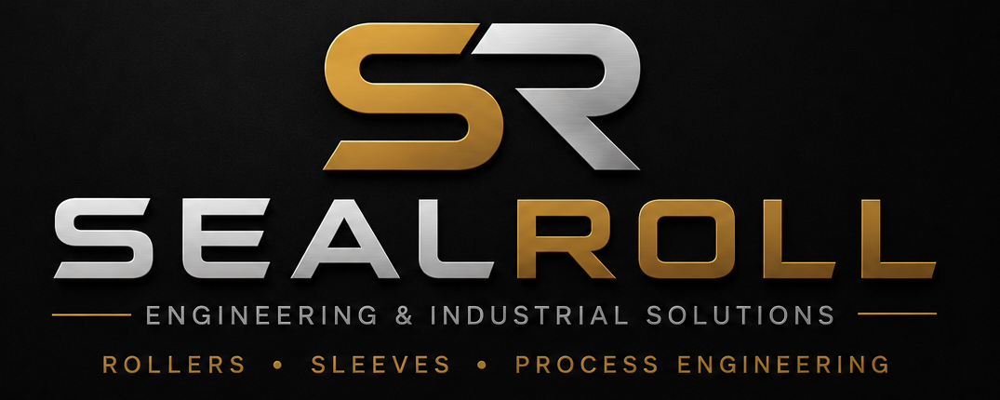

Nonwoven Roller Systems
Application-specific roller concepts for wiping, sealing, anti-slip and surface protection duties in metal processing lines.

Industrial Roller Technologies
SealRoll develops engineered nonwoven roller technologies for rolling mills, pickling and cleaning lines, oil removal sections and strip handling applications.
ROLLERS • SLEEVES • PROCESS ENGINEERING
Built for demanding production environments where wiping performance, surface quality, strip stability and downtime matter.
What we build
Application-specific roller concepts for wiping, sealing, anti-slip and surface protection duties in metal processing lines.
Roller solutions designed to improve wiping performance and reduce residual moisture, oil and surface staining before recoiling.
Practical support for shafts, bearing blocks, roll rebuilding and custom industrial roller configurations.
Technology direction
SealRoll develops high-performance nonwoven roller solutions engineered to improve wiping efficiency, strip surface quality and operational reliability across rolling, pickling, cleaning and finishing lines.
Applications
Roller solutions for strip movement, surface control and line stability.
Wiping and fluid-control applications after rinsing and cleaning stages.
Oil control before recoiling to reduce slip risk and improve coil handling.
Strip guidance, friction consistency and winding stability applications.
Capability scope
About
SealRoll was founded by Ali Haydar Gültürk, a mechanical engineer with hands-on experience in non-ferrous metallurgy, casting, extrusion, rolling, heat treatment and industrial production processes.
Contact